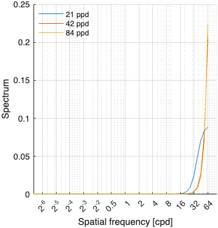
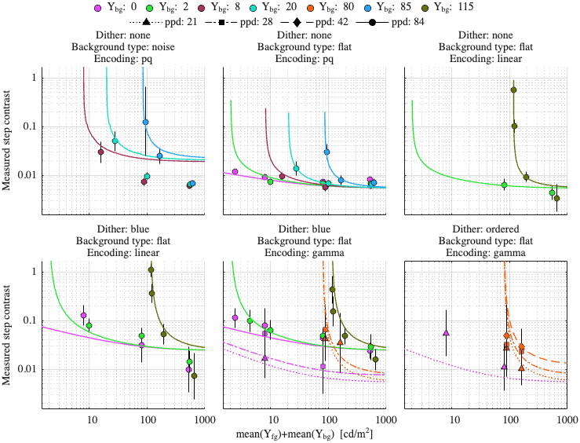
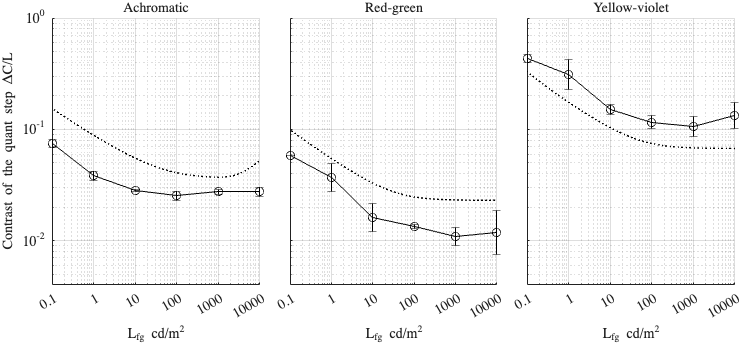

Fitting config: dither_spd, model: mutual_masking_freq_pool
Fitting error (RMSE): 0.296094
Model parameters
p.beta = 0.587799; p.gs_num = [ 0.121291 0.00121289 0.936972 ]; p.noise_params = [ 0.449839 0.15496 0.514123 7.66813 ]; p.dither_amp_params = [ 2.28099 0.727176 ]; p.blue_dither_params = [ 1.75971 6.5841 0.000607547 0.323545 ];
Model components
Blue noise dither spectrum

Dataset: [ar2025]
Scaling factor: 1.43819

Dataset: [kim2020]
Scaling factor: 4.98924
